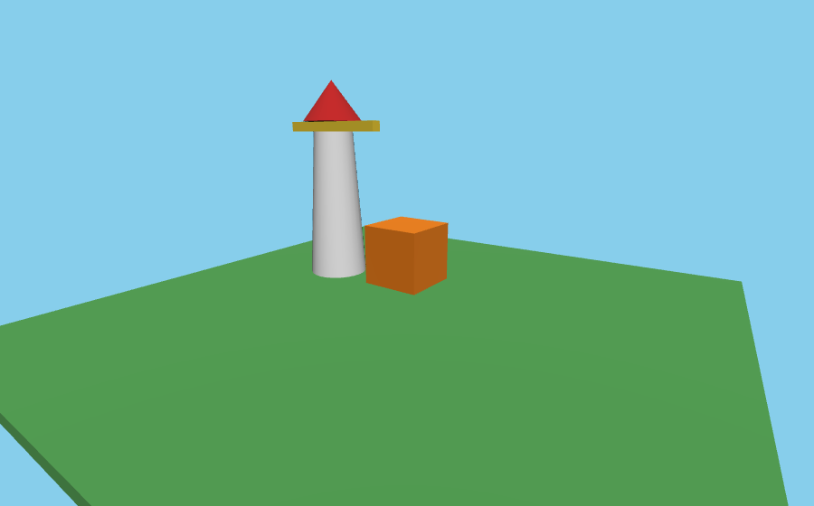
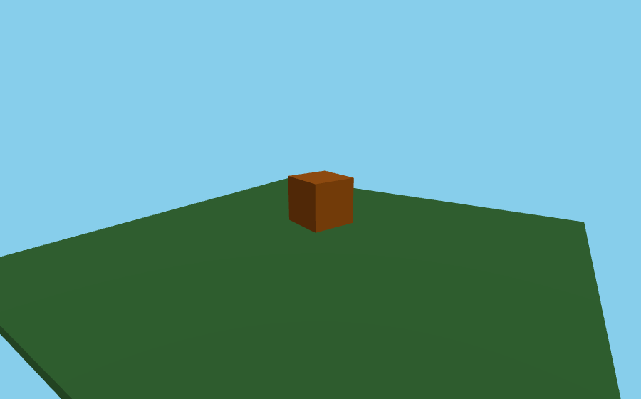
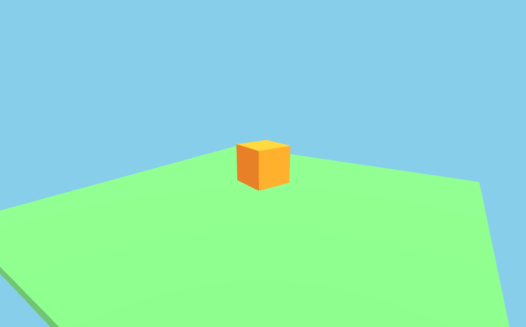

Naast de kubus staat een vuurtoren. Bovenaan draait een lichtstraal rond. Druk ik op de spatiebalk, dan stopt de lichtstraal.
Context: een three.js-scène in index.html. De afspraken van het project staan in AGENTS.md.
Input: een druk op de spatiebalk.
Output: een vuurtoren links van de kubus. De toren is een witte cilinder met een rood dak in de vorm van een kegel. Net onder het dak draait een gele balk traag rond: dat is de lichtstraal. Bij een druk op de spatiebalk stopt de lichtstraal. Bij een volgende druk draait hij verder.
Beperkingen: verander de vloer, de kubus, de camera en het licht niet.
Vergelijk het resultaat met wat je vroeg
Een eerste versie is een vertrekpunt

Doet het wat je vroeg?
Wat koos het model zelf?
Kwam er iets bij wat je niet vroeg?
Volgde de agent de afspraken?
Het werkt. Maar het is niet af, en je weet nog niet waarom het werkt.
Voor je iets verandert
Eerst je versie bewaren, dan pas verder prompten.
In deze les: kopieer de map scene naar scene-v1. In de kopie verander je niets meer.
Zorg dat je altijd terug kan
Bewaar je eerste versie
✏️
De agent past je bestanden aan
Wat er eerst stond, is dan weg.
↩️
Een stap loopt mis
Je vertrekt opnieuw van een versie die werkte.
🔍
Je wil vergelijken
Wat was de eerste versie, en wat maakte jij ervan?
Versiebeheer, zoals Git, bewaart elke versie van je bestanden. Zo werk je in een echt project. Een kopie van je map is een vervanging voor deze les, geen gewoonte.
Een voorwerp, of iets abstracts
Wat zet jij in de scène?
je sportje muziekje bijbaanje huisdiereen gameje lievelingsetenwaar je woont
een bewegingeen gevoeleen kleurparticleseen effect
Kies iets wat niet iedereen zou kiezen. Hou het bij één idee: elke prompt kost AI credits.
Jouw beurt · alleen · met je agent harness
M1Mijn scène: een eerste versie
Zonder AI: drie zinnen. Wat komt erbij, wat beweegt, wat doet een toets of klik?
Schrijf je prompt: zie de opgave.
Map scene, nieuw gesprek. Herlaad de pagina.
Leeg scherm? F12, Console. Plak de rode regel in je prompt.
Screenshot. Wat koos het model zelf?
Bewaar je versie: kopieer de map naar scene-v1.
15:00
Hoogstens twee prompts.
3.2
Begrijp wat je kreeg
Waarom heeft de scène een licht nodig?
Lees eerst zelf. Zoek wat je niet kan uitleggen.
Vraag uitleg over één ding
index.html · het licht in het startproject
const lightIntensity = 3;
const sunLight = new THREE.DirectionalLight(0xffffff, lightIntensity);
✕ Een lange tekst over alles
Leg de code uit.
✓ Een antwoord dat je kan controleren
Verander niets aan de code. Leg in eenvoudige woorden uit waarom deze scène een licht nodig heeft, en wat lightIntensity doet.
Uitleg vragen is een vraag van de soort evalueren. Zeg dus dat de agent niets mag veranderen.
Een uitleg is een bewering.
Een model klinkt altijd zeker, ook als het fout zit. Een bewering kan je testen.
Zo test je een uitleg
Voorspel, verander, kijk
1 · Voorspel
Als de uitleg klopt, wat zie je dan als lightIntensity 0 is in plaats van 3?
→
2 · Verander
Verander de waarde zelf in de code. Zonder de agent.
→
3 · Kijk
Herlaad de pagina. Klopt je voorspelling?
Je begrijpt een regel als je kan voorspellen wat er gebeurt wanneer je ze verandert.
Live · eerst voorspellen, dan kijken
Wat zie je voor vier waarden?
0 · de kubus en de vloer zijn zwart, de lucht blijft blauw

1 · donkerder dan in het startproject3 · het startproject

10 · veel feller en bleker
Klopt je voorspelling niet? Dan is de uitleg fout, of je begreep ze anders. In beide gevallen weet je meer.
Jouw beurt · alleen · met je agent harness
M2Mijn scène: begrijp wat je kreeg
Lees index.html. Kies één regel of één getal dat je niet kan uitleggen.
Vraag uitleg in een nieuw gesprek. De agent mag niets veranderen.
Schrijf de uitleg in je eigen woorden.
Voorspel. Verander de waarde zelf. Kijk.
12:00
Hoogstens twee prompts.
Tot zo
Pauze
15:00
3.3
Verder bouwen met feedbackpunten
Wat klopt niet, wat ontbreekt en wat wil je anders?
Klein en concreet
Schrijf op wat je ziet
De vuurtoren staat te dicht bij de kubus. Hij moet verder naar links.
De lichtstraal is moeilijk te zien. Hij moet twee keer zo dik worden.
De vloer past niet bij een vuurtoren. Hij moet de kleur van zand krijgen.
“Maak het mooier” is geen feedbackpunt. Dan moet het model zelf kiezen wat mooi is.
Elk punt is een aparte vervolgprompt
Eén punt per prompt
Zet de vuurtoren verder naar links, zodat er ruimte is tussen de toren en de kubus. Verander niets anders.
✓ Eén punt per prompt
Loopt er iets mis? Dan is het de laatste wijziging.
✕ Drie punten tegelijk
De lichtstraal draait niet meer. Welke wijziging is de oorzaak? Dat weet je niet.
Herlaad de pagina in je browser
Controleer na elke stap
🎯
Is het punt opgelost?
Zie je wat je vroeg?
🧱
Werkt alles nog wat al werkte?
Draait de kubus nog? Reageert de scène nog op je toets?
Pas daarna stuur je het volgende punt. Lukte een stap goed? Bewaar opnieuw een versie: scene-v2.
Een leeg scherm, of er beweegt niets meer
Als een stap misloopt
Console: druk in je browser op F12 en kies Console. Kopieer de rode regel en plak ze in je prompt. Dat werkt ook voor een waarschuwing.
Sinds de laatste wijziging blijft het scherm leeg. In de console staat:
ReferenceError: lighthouse is not defined
Wil je begrijpen wat er misliep?
Wat betekent deze melding? Verander niets aan de code.
Wil je verder?
Los deze fout op. Verander niets anders.
Twee pogingen en nog niet opgelost? Ga terug naar je laatste versie die werkte.
Jouw beurt · alleen · met je agent harness
M3Mijn scène: twee feedbackpunten
Schrijf twee feedbackpunten. Elk punt is één kleine wijziging.
Nieuw gesprek. Stuur punt 1. Zeg dat de rest hetzelfde blijft.
Herlaad. Opgelost? Werkt de rest nog? Noteer.
Punt 2, in hetzelfde gesprek.
Screenshot. Wat is het grootste verschil met scene-v1?
12:00
Hoogstens vier prompts.
3.4
Code inpassen in een bestaand project
Nieuwe code moet passen bij wat er al is.
Je vraagt een boom in een chatvenster, zonder het project en zonder AGENTS.md
De code werkt. Past ze ook?
boom.js
import * as THREE from'three';
export functionmaak_boom() {
const stam = new THREE.Mesh(
new THREE.CylinderGeometry(0.2, 0.3, 2),
new THREE.MeshStandardMaterial({ color: 0x8b5a2b })
);
stam.position.y = 1;
return stam;
}
Naamgeving:maak_boom. Het project gebruikt Engels en camelCase: createCube.
Plaats: een nieuw bestand. In het project staat alle code in index.html.
Wat er al is: de kleur staat midden in de function. In het project staan kleuren bovenaan.
Er is niets mis met wat deze code doet. Maar ze past niet in het project.
Bij gegenereerde code voor een bestaand project
Vier controlepunten
🏷️
Naamgeving
createCube of maak_boom?
📁
Plaats
Het juiste bestand, in de juiste map?
♻️
Wat er al is
De instellingen bovenaan en animate(), of een tweede versie?
Wat je vooraf zegt, moet je achteraf niet aanpassen
Zeg het vooraf
In je prompt: in welk bestand de code komt, en wat er al bestaat.
In een instructiebestand: de afspraken die altijd terugkomen. In jouw scène is dat AGENTS.md.
AGENTS.md · drie van de afspraken
- Alle code staat in `index.html`. Maak geen extra bestanden. De pagina wordt geopend met een dubbelklik, zonder server.
- Elk voorwerp of effect krijgt een eigen function die het maakt, zoals `createCube()`.
- Namen en comments zijn in het Engels. Namen staan in camelCase.
Een instructiebestand is context, geen garantie. Controleer daarna toch de vier punten.
Eén groot bestand wordt snel onleesbaar
Elk bestand zijn eigen taak
index.html
De structuur van de pagina: wat er is.
style.css
De opmaak: hoe het eruitziet.
main.js
Het gedrag: wat er gebeurt.
Separation of concerns: elk deel van je project heeft één taak, in een eigen bestand.
Een trade-off: beter leesbaar, maar je hebt een server nodig
Splitsen heeft een prijs
✕ Dubbelklik op index.html
Het scherm blijft leeg. In de console staat een rode regel met blocked by CORS policy.
✓ Via een lokale server
Typ node server.js in de terminal. Open localhost:3000 in je browser.
Server: een programma dat bestanden doorgeeft aan je browser. Een browser laadt main.js niet rechtstreeks van je schijf.
Wil je het anders dan de afspraak? Pas eerst de afspraak in AGENTS.md aan. Vraag daarna de wijziging.
Een vraag om aan te passen: zeg wat verandert, en wat blijft
Zo vraag je de splitsing
Verdeel de code over index.html, style.css en main.js, zoals de afspraken in AGENTS.md zeggen. De scène moet precies hetzelfde tonen en doen als nu: de kubus draait, en de spatiebalk stopt de lichtstraal. Voeg niets toe.
Het doel
Dezelfde scène, in een betere structuur. Geen nieuwe dingen.
Daarna controleer je
Toont en doet de scène nog hetzelfde? Volgde de agent de afspraken?
Jouw beurt · alleen · met je agent harness
M4Splits je project op
Bewaar een versie. Kopieer server.js.
Pas de afspraak aan in AGENTS.md.
Vul de prompt uit de opgave aan: zeg wat blijft.
Dubbelklik: leeg scherm. Noteer de rode regel.
node server.js, dan localhost:3000.
Controleer de zes afspraken.
Eén voordeel, één nadeel.
17:00
Hoogstens twee prompts.
Tot zo
Pauze
15:00
3.5
Typische tekortkomingen
De code voert uit. Klopt ze ook?
Spoor ze zelf op
Vijf tekortkomingen die vaak terugkomen
Meer dan je vroeg. Extra onderdelen, of te ingewikkeld.
Logicafouten. De code voert uit, maar het resultaat klopt niet.
Alleen de happy path. Ongeldige input wordt overgeslagen.
Aannames uit de training data. Vaak Engelstalig en Amerikaans.
Code voor een oude versie van een library.
Een vraag voor de zaal
Welke maand toont deze code?
const date = newDate("03/04/2026");
console.log(date.getMonth() + 1);
3
Voor ons is 03/04/2026 de derde april. JavaScript leest maand/dag/jaar. De code crasht niet, dus de fout valt niet op.
Een model kent een library tot zijn knowledge cutoff
Code voor een oude versie
const geometry = new THREE.Geometry();
TypeError: THREE.Geometry is not a constructor
Deze regel werkte in oude versies van three.js. In nieuwere versies bestaat Geometry niet meer.
Zeg welke versie je gebruikt, in je prompt of in je instructiebestand. In jouw scène staat ze in AGENTS.md.
“Werkt het?” is de eerste vraag, niet de laatste.
Wie alleen kijkt of de code uitvoert, mist elke fout die geen foutmelding geeft. Oefen dit met Test jezelf 3.5.
3.6
Configuratie en geheimen
Een wachtwoord hoort niet in je code.
Een agent genereert dit snel
Wat is hier mis?
Configuratie: bestanden die instellen hoe je project werkt.
Het wachtwoord staat letterlijk in de code. Dat wordt een probleem zodra je de code deelt.
Zo bewaren en delen developers hun code
Git in het kort
Repository
Een projectmap waarvan Git de geschiedenis bijhoudt.
Commit
Eén bewaarde versie van je project in die geschiedenis.
GitHub
Een website waar je een repository online bewaart en deelt. Public: iedereen ziet ze. Private: alleen jij, en wie je uitnodigt.
.gitignore
Een bestand met een lijst van bestanden en mappen die Git overslaat. Ze komen niet in een commit.
Git is de bekendste software voor versiebeheer. Zelf met Git werken doe je later in deze cursus.
Git bewaart elke commit
Een geheim in Git is gelekt
📌
In een commit
Het wachtwoord staat in de geschiedenis van je repository.
🧹
Later verwijderd
In de vorige commits staat het er nog altijd.
🌍
Een public repository
Iedereen kan het lezen.
Een bekende beginnersfout: snel code laten genereren, alles online zetten en er niet naar kijken. Een geheim dat ooit gedeeld werd, vervang je door een nieuw.